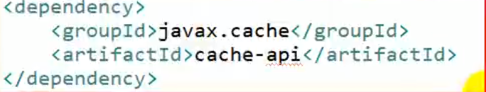
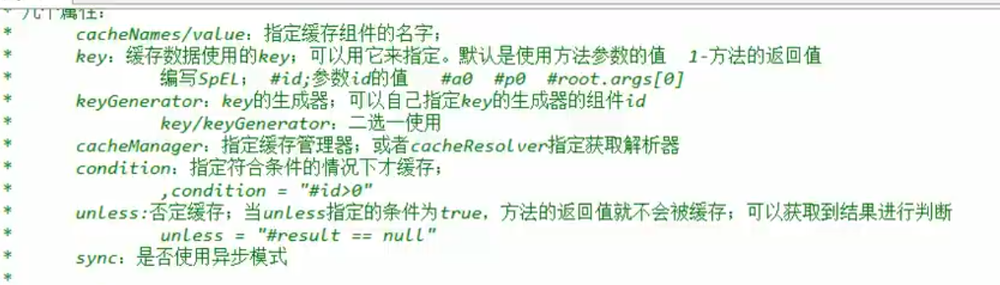
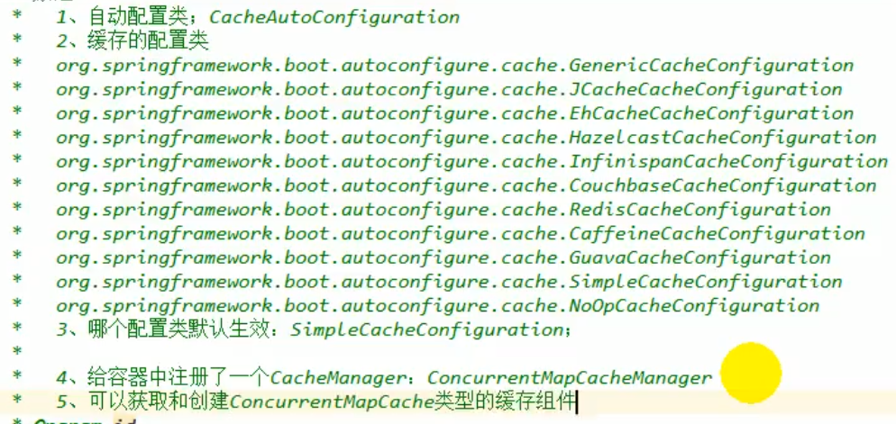
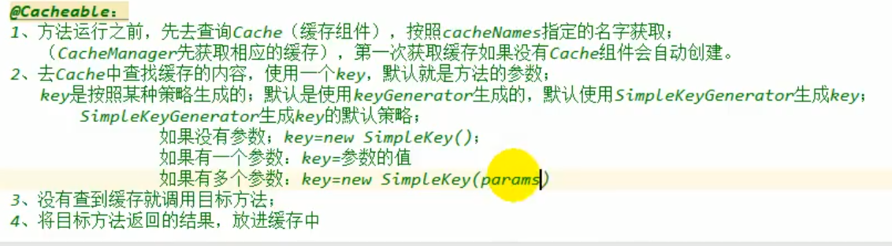
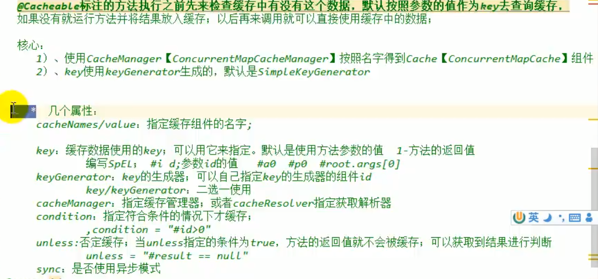
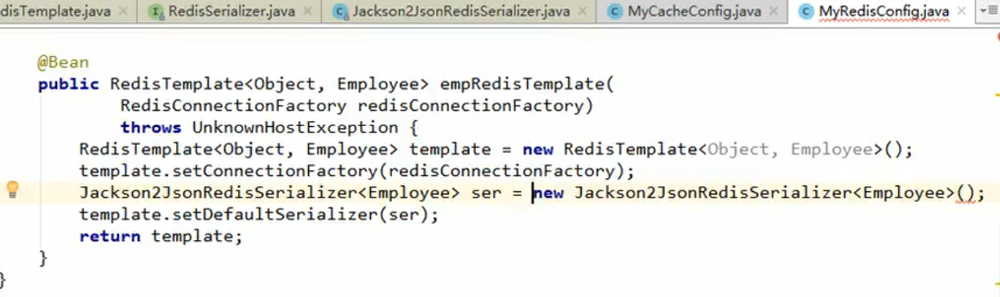
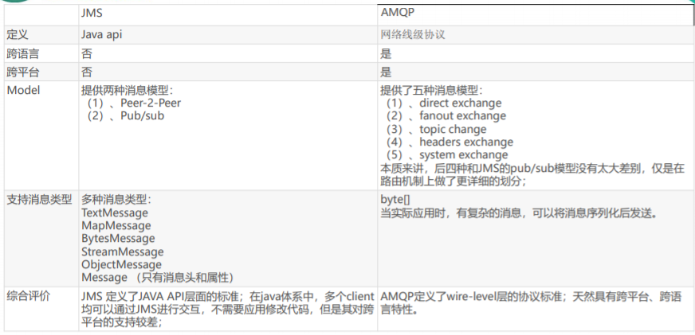
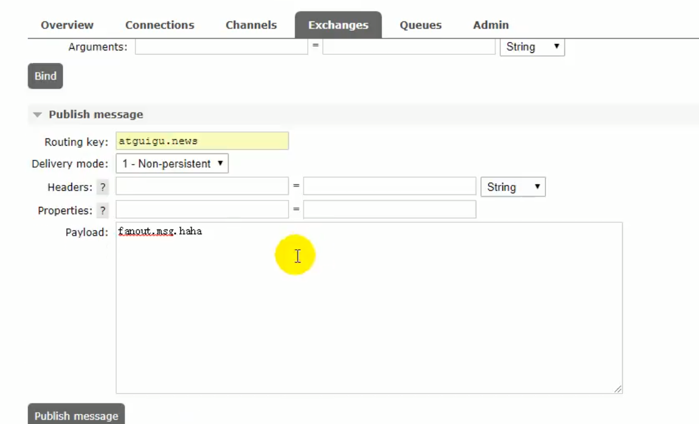
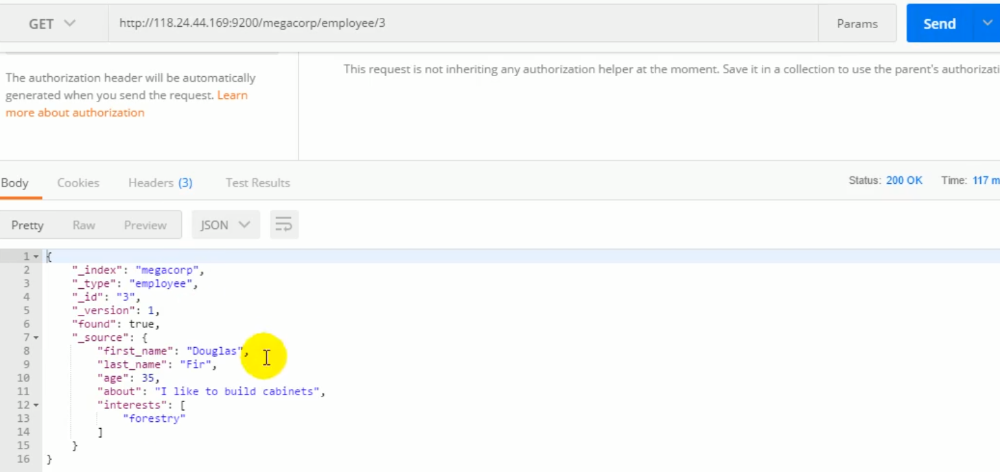
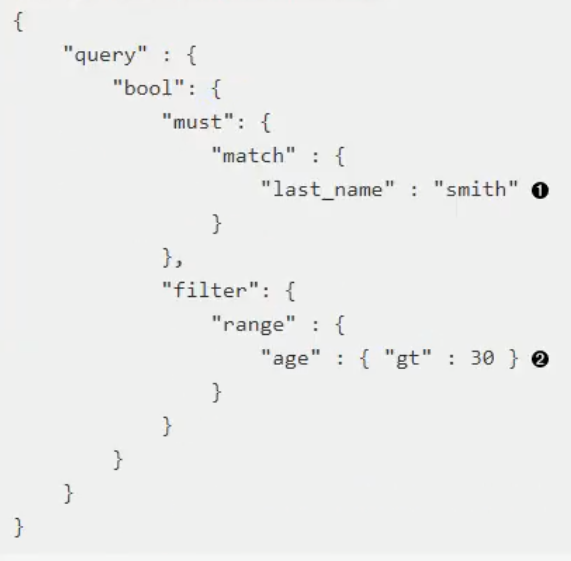

一、缓存
JSR107缓存规范
整合难度比较大，一般使用Spring缓存抽象，了解
Java Caching定义了5个核心接口，分别是CachingProvider, CacheManager, Cache, Entry 和 Expiry。
- CachingProvider定义了创建、配置、获取、管理和控制多个CacheManager。一个应用可 以在运行期访问多个CachingProvider。
- CacheManager定义了创建、配置、获取、管理和控制多个唯一命名的Cache，这些Cache 存在于CacheManager的上下文中。一个CacheManager仅被一个CachingProvider所拥有。
- Cache是一个类似Map的数据结构并临时存储以Key为索引的值。一个Cache仅被一个 CacheManager所拥有。
- Entry是一个存储在Cache中的key-value对。
- Expiry 每一个存储在Cache中的条目有一个定义的有效期。一旦超过这个时间，条目为过期 的状态。一旦过期，条目将不可访问、更新和删除。缓存有效期可以通过ExpiryPolicy设置。

使用：
导入依赖

其中就有上述5个接口
Spring缓存抽象
3.1以后定义了cacheManager和Cache接口来统一不同的缓存技术，并支持使用JCache（JSR-107）注解简化我们开发。
接口与缓存注解
| 说明 | 例子 | |
|---|---|---|
| cache | 缓存接口，定义缓存操作。实现有：RedisCache、EhCacheCache、 ConcurrentMapCache等 | |
| CacheManager | 缓存管理器，管理各种缓存（Cache）组件 | |
| @Cacheable | 主要针对方法配置，能够根据方法的请求参数对其结果进行缓存,首先检查缓存如果没有命中则执行方法并将方法结果缓存 | @Caccheable public User getUser(Integer id ) |
| @CacheEvict | 清空缓存 | 删除方法时清空缓存 |
| @CachePut | 保证方法被调用，又希望结果被缓存。缓存更新，执行方法并将方法执行结果更新到缓存中 | 更新方法被调用 |
| @EnableCaching | 开启基于注解的缓存 | |
| keyGenerator | 缓存数据时key生成策略 | |
| serialize | 缓存数据时value序列化策略 | 缓存中存放的是序列化还是json |
使用
• 1、引入spring-boot-starter-cache模块
• 2、@EnableCaching开启缓存
• 3、使用缓存注解
• 4、切换为其他缓存


@Cache
运行流程


@Cacheable标注的
几个属性
cacheNames/value：指定缓存组件的名字
cacheManager：指定缓存管理器，或则cacheResolver指定获取解析器
condition：指定符合条件的情况下才缓存 condition = "# id>0"
unless：否定缓存，当unless指定条件为true，方法的返回值不会被缓存
sync：是否使用异步模式，此时unless就不执行了
@CachePut方法：更新缓存
修改了数据库的某个数据，同时更新缓存
1：运行时机，先调用方法，再将结果缓存进去
如果第一步@Cacheable查询的主键生成策略是id，而这个默认的key是传入的参数
参数：
key = “employee.id”//使用传入参数的id作为key
key = “result.id"//使用返回结果的id作为key
@CachePut
public Employee update(Employee employee){
}
@cacheEvict：缓存清除
allEntries = true 是否删除缓存中所有的数据
beforeInvocation = false ：缓存的清除是否在方法之前执行，默认代表实在方法执行之后执行，如果出现异常，缓存就不会清除。
如果设为true，之前执行，无论方法是否执行成功，缓存都会清除。
@CacheEvict(valule="emp",key = "#id")
public void delete(Integer id){
}
@Caching：多个注解规则
@Cahce(
cacheable = {
@Cacheable(value = "emp" ,key = "#id")
},
put = {
@CachePut(value = "emp" ,key = "#result.id")
@CachePut(value = "emp" ,key = "#result.email")
}
)
在类上加@CacheConfig
@cahceConfig(value="emp")这样此类中所有方法都会加上这个属性
默认使用的是ConcurrentMapCacheManager
整合Redis进行缓存
linux安装docker安装Redis
安装Redis客户端
整合Redis的start
spring-boot-starter-data-redis
配置redis
使用
@Autowired
StringRedisTemplate stringRedisTemplate;//操作k-v都是字符串的
@Autowired
RedisTemplate redisTemplate;//操作k-v都是对象的
@Test
public void test(){
//保存对象
//默认如果保存对象，使用jdk序列化机制，序列化后的数据存到redis中
redisTemplate.opsForValue().set("emp-01",empById);
//将数据转换为json的方式保存
//1:自己讲对象转成json
//2:修改默认的序列化规则
empRedisTemplate.opsForValue().set("emp",empById);
}

原理：
CacheManager创建Cache
引入Redis的start后默认的SimpleCacheManager就不再使用，容器中保存的是RedisCacheManager
RedisCacheManager创建RedisCache
@Primary：将某个缓存管理器设为默认的缓存管理器
序列化：
SpringBoot RedisTemplate用来操作Key-value为对象类型，默认采用JDK序列化类型，JDK序列化性能差，二且存储到Redis客户端是二进制不便于查询，JDK序列化要求实体实现Serializable接口，修改RedisTemplate的序列化配置
二、消息
JMS与AMQP
异步处理
应用解耦
消息服务中两个重要概念：
消息代理（message broker）和目的地（destination)
当消息发送者发送消息以后，将由消息代理接管，消息代理保证消息传递到指定目 的地。 3. 消息队列主要有两种形式的目的地 1. 队列（queue）：点对点消息通信（point-to-point）
- 主题（topic）：发布（publish）/订阅（subscribe）消息通
点对点方式：
消息只有唯一的发送者和接受者，但并不是说只能有一个接收者，只是说消息只能消费一次，一个消费者消费了，其他就消费不到了
发布订阅式： – 发送者（发布者）发送消息到主题，多个接收者（订阅者）监听（订阅）这个主题，那么 就会在消息到达时同时收到消息
JMS：基于JVM消息代理的规范，ActiveMQ是JMS实现
AMQP：高级消息队列协议，兼容JMS
RabbitMQ是AMQP的实现

Spring-jms支持JMS
spring-rabbit提供了对AMQP的支持
RabbitMQ简介
Message
消息，消息是不具名的，它由消息头和消息体组成。消息体是不透明的，而消息头则由一系列的可选属性组 成，这些属性包括routing-key（路由键）、priority（相对于其他消息的优先权）、delivery-mode（指出 该消息可能需要持久性存储）等。
Publisher
消息的生产者，也是一个向交换器发布消息的客户端应用程序。
Exchange
交换器，用来接收生产者发送的消息并将这些消息路由给服务器中的队列。
Exchange有4种类型：direct(默认)，fanout, topic, 和headers，不同类型的Exchange转发消息的策略有 所区别
Queue
消息队列，用来保存消息直到发送给消费者。它是消息的容器，也是消息的终点。一个消息 可投入一个或多个队列。消息一直在队列里面，等待消费者连接到这个队列将其取走。
Binding
绑定，用于消息队列和交换器之间的关联。一个绑定就是基于路由键将交换器和消息队列连 接起来的路由规则，所以可以将交换器理解成一个由绑定构成的路由表。 Exchange 和Queue的绑定可以是多对多的关系。
Connection
网络连接，比如一个TCP连接。
Channel
信道，多路复用连接中的一条独立的双向数据流通道。信道是建立在真实的TCP连接内的虚 拟连接，AMQP 命令都是通过信道发出去的，不管是发布消息、订阅队列还是接收消息，这 些动作都是通过信道完成。因为对于操作系统来说建立和销毁 TCP 都是非常昂贵的开销，所 以引入了信道的概念，以复用一条 TCP 连接。
Consumer
消息的消费者，表示一个从消息队列中取得消息的客户端应用程序。
Virtual Host
虚拟主机，表示一批交换器、消息队列和相关对象。虚拟主机是共享相同的身份认证和加 密环境的独立服务器域。每个 vhost 本质上就是一个 mini 版的 RabbitMQ 服务器，拥有 自己的队列、交换器、绑定和权限机制。vhost 是 AMQP 概念的基础，必须在连接时指定， RabbitMQ 默认的 vhost 是 / 。
Broker
表示消息队列服务器实体
整合RabbitMQ
Centos安装Docker安装RabbitMQ
下载：
docker pull registry.docker-cn.com/library/rabbitmq:3-management
docker images （查看有哪些）
运行（后台运行，暴露端口）
docker run -d -p 5672:5672 -p 15672:15672 --name myrabbitmq 镜像id
ip:15672
默认账号guest，密码：guest

新建交换器：

新建队列

队列绑定交换器
选择需要绑定的交换器，点进去

测试发送消息

工程
SpringBoot自动配置
@Autowired
RabbitTemplate rabbitTemplate;
@Test
public void contextLoads(){
//Message需要自己构造一个，定义消息体和消息头
rabbitTemplate.send(exchage,routeKey,message);
//转换并发送，
//object默认当成只需要传入要发送的对象，自动序列化发送给rabbitmq
rabbitTemplate.convertAndSend("exchage.direct","routeKey",object);
}
@Test
public void revice(){
Object o = rabbitTemplate.receiveAndConvert("queueName");
//如果发送方发送的是hashMap，则该object就是hashMap,如果是一个类，那么这个object就是类
}
默认使用Java的序列化方式
如果想转换为json格式，重写MessageConfig
监听场景：
订单发送到队列，仓库取出订单
注意一定声明为
@RabbitListener(queues = "aaa.news")
public void receive(Book book){
System.out.println("收到消息：" + book);
}
//获取整个消息，包括消息头
@RabbitListener(queues = "aaa.news")
public void receive(Message message){
System.out.println("收到消息：" + message.getBody());
}
创建和删除Queue
@Autowired
AmqpAdmin amqpAdmin;
@Test
publlic void createExchange(){
//定义交换机
amqpAdmin.declareExchange(new DirectExchange("amqpadmin.exchange"));
//创建队列
amqpAdmin.declareQueue(new Queue("amqpadmin.queue",true));
//绑定规则
amqpAdmin.declareBinding("amqpadmin.queue",Binding.DestinationType.QUEUE,"amqpadmin.exchange","路由名",null)
}
三、检索
安装
docker search elasticsearch
docker pull elasticsearch
ElasticSearch运行默认会占用2G的堆内存空间
docker run -e ES_JAVA_OPTS="-Xmx256m" -d -p 9200:9200 -p 9300:9300 --name ES01
概念
面向文档
使用Json作为文档的序列化格式

类似于MYSQL，
索引相当于数据库
类型相当于表
每一行记录相当于一个文档
每一个字段相当于一个属性
放入数据或更新
put

检索
get

HEAD
检查有没有
DELECT
删除
搜索所有员工
Get ：Http://IP:9200/索引/类型/_search
搜索部分字符串
Get:Http://IP:9200/索引/类型/_search?q=last_name:Smith
查询

查询过滤

整合Jest操作ES
SpringBoot默认使用SpringData操作
默认支持两种技术与ES进行交互
需要导入Jest的工具包
SpringData ElasticSearch
Client：节点信息clusterNodes，clusterName
ElasticSearchTemplate操作CS
编写一个ElasticSearchRepository的子接口来操作ES
使用jest
导入依赖
jest
配置
spring.elasticsearch.jest.uris=http:IP:9200/
使用
@Autowried
JestClient jestClient;
@Test
public void contextLoads(){
//给ES中索引一个文档
Article article = new Article();
article.setId(1);
article.setTitle("好消息");
//构建一个索引功能,放在A索引下，类型为B
Index index = new Index.Builder(article).index("A").type("B").build();
jestClient.execute(index);
//测试搜索
//组织查询表达式
String json = " 参考上边的内容";
Search search = new Search.Build(json).addIndex("A").addType("B");
SearchResult result = jest.execute(search);
}
在实体类中的字段添加主键注解
@JestId
private Integer Id;
整合SpringData
配置
spring.data.elasticsearch.cluster.name=elasticsearch
spring.data.elasticsearch.cluster.nodes = IP:9300
有可能不适配
四、任务
异步任务，发送邮件
开启异步注解
@EnableAysnc
标注异步方法
@Aysnc
定时任务
开启定时任务
@EnableScheduling
标注定时任务方法
@Scheduled
@Scheduled(cron="")
public void hello(){
}

邮件任务
引入依赖
srping-boot-start-mail
配置
spring.mail.username="邮箱地址"
spring.mail.password="授权码"
spring.mail.host=smpt.qq.com
使用
@Autowired
JavaMailSenderImpl mailSender;
@Test
public void test(){
//简单邮件
SimpleMailMessage message = newSimpleMailMessage();
//邮件设置
message.setSubject("通知");
message.setText("今晚7点开会");
message.setTo("110@qq.com");
message.setFrom("112@qq.com");
mailSender.send(message);
//复杂邮件
MimeMessage mimeMessage = mailSender.createMimeMessage();
MimeMessageHelper helper = new MimeMessageHelper(mimeMessage,true);
helper.setSubject("通知");
helper.setText("kaihui");
helper.setTo("110@qq.com");
helper.setFrom("112@qq.com");
helper.addAttachment("name",new File("PATH"));
}
五、安全
shiro
SpringSecurity
“认证”（Authentication），是建立一个他声明的主体的过程（一 个“主体”一般是指用户，设备或一些可以在你的应用程序中执行动 作的其他系统）。
“授权”（Authorization）指确定一个主体是否允许在你的应用程序 执行一个动作的过程。为了抵达需要授权的店，主体的身份已经有认 证过程建立。
导入依赖
编写配置类
@EnableWebSecurity
public class SecurityConfig extends WebSecurityConfigureAdapter{
protected void configure(HttpSecurity http) throws Exception{
//定制授权请求
http.authirizeRequsets().antMatchers("/").permitAll();
.antMatchers("/leave1/**").hasRole("VIP1")
.antMatchers("/leave2/**").hasRole("VIP2")
.antMatchers("/leave3/**").hasRole("VIP3");
//开启自动配置的登录功能
http.formLogin();
///login来到登录页
}
public void configure(AuthenticationManagerBuilder auth) throws Exception{
aut.inMemoryAuthentication()
.withUser("A").password("B").roles("VIP1","VIP2")
.and()
.withUser("C").password("D").roles("VIP2","VIP3")
.and()
.withUser("E").password("F").roles("VIP1","VIP2");
}
}
六、分布式
Dubbo
将不同的需求拆分到不同的模块
模块间远程调用RPC
注册中心Zookeeper，询问哪些服务器有我需要的模块
工作原理：

安装服务Zookeeper
docker hub查找Zookeeper镜像
Docker中国镜像加速地址
docker pull
docker images 查看
docker run --name zk01 -p2181:2181--restart always
创建服务提供者工程：
将服务提供者注册到注册中心
引入依赖
dubbo-spring-boot-starter
<!--引入Zookeeper客户端工具-->
zkClient
配置
dubbo.application.name = provider-ticker
dubbo.registry.address = zookeeper://ip:2181
dubbo.scan.base-package = com.xqc.ti.serivice
使用
添加dubbo的注解发布服务
@Service
创建消费者模块
引入依赖
dubbo-spring-boot-starter
<!--引入Zookeeper客户端工具-->
zkClient
配置
dubbo.application.name = consumer-user
dubbo.registry.address = zookeeper://ip:2181
使用
复制全部类名，添加@Reference远程调用注解使用
@Reference
private TickService tickService;
SpringCloud
Euraka
创建Eureka服务器注册中心
配置
server:
port:8761
eureka:
instance:
hostname:eureka-server #eureka实例的主机名
client:
register-with-eureka:false #不把自己注册到
fetch-registry:false # 不同注册中心获取
service-url:
defaultZone:
使用@EnableEurekaServer启用注册中心
provide
七、监控管理
actuator
引入依赖
spring-boot-starter-actuator
配置
management.security.enabled=false
监控

定制端点：
配置
endpoints.beans.id=mybean
endpoints.beans.path=/mybean
endpoints.beans.enabled=false #保护不可访问
endpoints.dump.path=/du
定制端点一般通过endpoints+端点名+属性名来设置。
– 修改端点id（endpoints.beans.id=mybeans）
– 开启远程应用关闭功能（endpoints.shutdown.enabled=true）
– 关闭端点（endpoints.beans.enabled=false）
– 开启所需端点
• endpoints.enabled=false
• endpoints.beans.enabled=true
– 定制端点访问根路径
• management.context-path=/manage
– 关闭http端点
• management.port=-1
自定义健康状态：